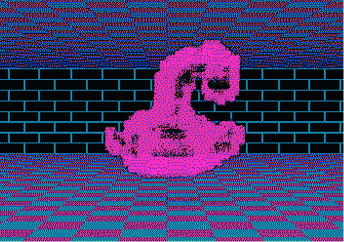
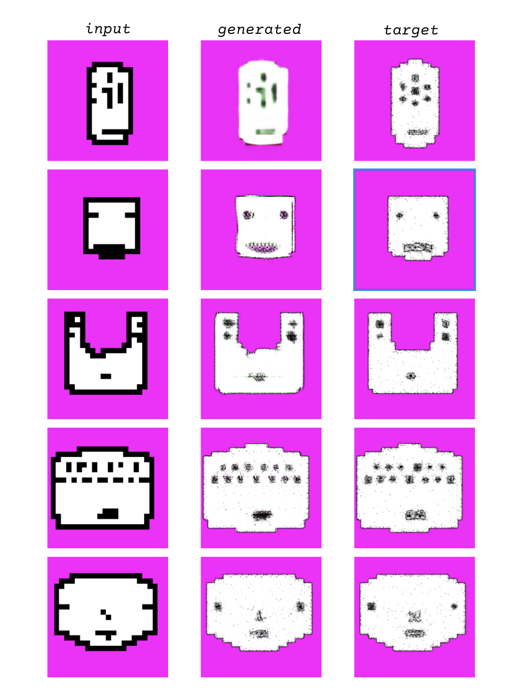

Benjamin Santiago
Beholder of Igoe is based on the book Physical Computing which contains a diagram of a creature representing "what a computer sees" from the perspective of a typical computer's inputs. The software is a demo for a teaching tool narrativizing a class as a dungeon-crawling adventure, encountering similar monsters derived from historical and contemporary writing about computers and interaction design.

The training images are from the output of a collection of small, locally trained VQVAE models designed to produce face illustrations. My intention was to produce ML-based, non-deterministic illustrations without fine-tuning or using an existing (dubiously or opaquely trained) model. This was meant to be the beginning of a game-like simulation, as well as to test its efficacy and potential as a teaching tool to create images that reflect the input of small, private, datasets from a class, or similarly-sized group.
